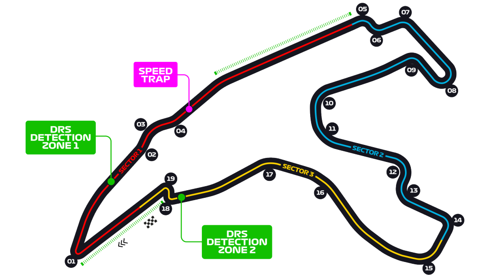

When was the track built?
Constructed in just 110 days in 1922, the Autodromo Nazionale Monza was the world's third purpose-built race track, coming after Brooklands in the UK and Indianapolis in the US. Like those two tracks, the original circuit featured a daunting series of banked curves, as well as much of the 'outfield' section that's still in use today.
When was its first Grand Prix?
Monza opened its doors on September 3 1922, just a week before it hosted that year's Italian Grand Prix. It was then part of the original Formula 1 calendar in 1950, and has held the Italian Grand Prix every year bar one since.
What's the circuit like?
Rapido! Formula 1's fastest ever lap was set at Monza by Williams driver Juan Pablo Montoya's 260.6km/h effort during practice for the 2004 Grand Prix which should give you some idea of the nature of the track the locals call 'La Pista Magica'. Cars are on full throttle for 80% of the lap, and hit their Vmax on the circuit's 1.1km start/finish straight. From there, they roar off into the historic park section, where a series of big stops into tight chicanes give the brakes a good workout.

When was the track built?
Little did those laying the perimeter road to the RAF Silverstone airfield in 1942 know that they were setting down what would become one of the world's greatest race tracks. But, well, they were! The Silverstone circuit was first used for a proper motor race in 1947 although sadly, a local sheep lost its life during the proceedings…
When was its first Grand Prix?
Silverstone was the first Grand Prix, hosting the inaugural Formula 1 World Championship round on May 13 1950. Old campaigner Giuseppe Farina, who'd take that year's title, won the race in his Alfa Romeo 158.
What's the circuit like?
At the 2018 British Grand Prix, Lewis Hamilton compared a flat-out lap around Silverstone to flying a fighter jet, which should tell you all you need to know about the Northamptonshire circuit. Despite numerous layout changes over the years, Silverstone has always maintained its essential character as one of the fastest tracks on the F1 calendar, while historic corners like Maggotts, Becketts and Abbey provide some of the biggest challenges for racing drivers anywhere in the world.

When was the track built?
The original, triangle-shaped track was built in 1921, with designers Jules de Thier and Henri Langlois van Ophem using public roads between the towns of Francorchamps, Malmedy, and Stavelot to create an amazing 14.9km circuit taking in the forests and rolling hills of the beautiful Ardennes region. The track was redeveloped in 1979, and although the new circuit is only half the original's length, it's still the longest on the current calendar at 7.004km.
When was its first Grand Prix?
Having hosted a non-championship Grand Prix as long ago as 1924, Belgium's iconic circuit was one of just seven to be part of Formula 1's maiden championship in 1950. That race was won by the legendary Juan Manuel Fangio, who led home an Alfa Romeo one-two ahead of team mate Nino Farina.
What's the circuit like?
Spa is among Formula 1 drivers' most loved tracks, with its mix of long straights and challenging fast corners allowing them to push their cars to the edge of their capabilities if it's dry, that is. The size of the track and the nature of Belgian weather means it can sometimes be raining on one part of the track and dry on another, meaning grip can vary from one corner to the next. Keep an eye on the thrilling Eau Rouge, arguably the most famous sequence of corners in the world, as the drivers flick left, right and then up the hill through Raidillon.

When was the track built?
In 1962. Soichiro Honda, whose car company you may have heard of, was a man with big ambitions. Seeking to turn Honda into an automotive powerhouse, he decided his company should have its own test track. Dutchman John Hugenholtz got the nod, and drew up the now-iconic 'crossover' Suzuka track although original drawings saw the track pass over and under itself a full three times, which would have been sweet!
When was its first Grand Prix?
Despite most people agreeing that Suzuka is a worthy successor to sliced bread in the 'Best Thing' stakes, the Japanese track was a relative latecomer to the F1 calendar, making its first appearance in 1987. Nigel Mansell would remember that weekend well, after he suffered a crash in qualifying that ruled him out of the race, gifting that year's championship to his bitter rival Nelson Piquet.
What's the circuit like?
Show us a racing a driver who doesn't love Suzuka, and we'll show you a liar. The high-speed track remains one of the ultimate driving challenges, with the snaking 'S' Curves, the two commitment-rewarding Degners and the white-knuckle ride of 130R all highlights in a series of highlights at what is one of F1's seminal tracks. And hey, it's got a crossover, which is always cool, right?
When was the track built?
In 1215, sort of - that's when Monaco was first established as a colony of Genoa.
When was its first Grand Prix?
It was 1929 when racing engines first reverberated around the Principality, after cigarette manufacturer Antony Noghes decided to organise a race with his pals from the Automobile Club de Monaco. The race was part of the calendar in the first year of the Formula 1 World Championship in 1950, and hasn't been off it since 1955.
What's the circuit like?
Incredibly narrow and totally iconic. Nelson Piquet memorably described driving around Monaco as “like riding a bicycle around your living room”… which is fair. Despite that, it's a challenge that nearly all drivers love, forcing them to put their skills on the line and rewarding millimetric accuracy. Overtaking on the tight streets is harder, however, with the 2003 Grand Prix witnessing a grand total of zero passing moves!